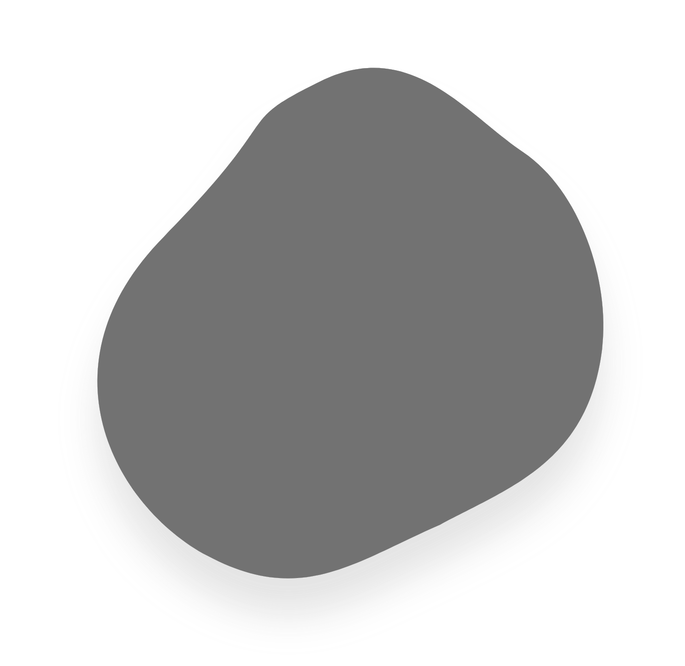
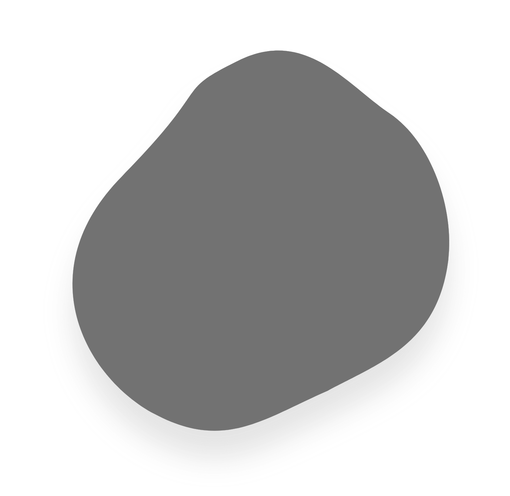
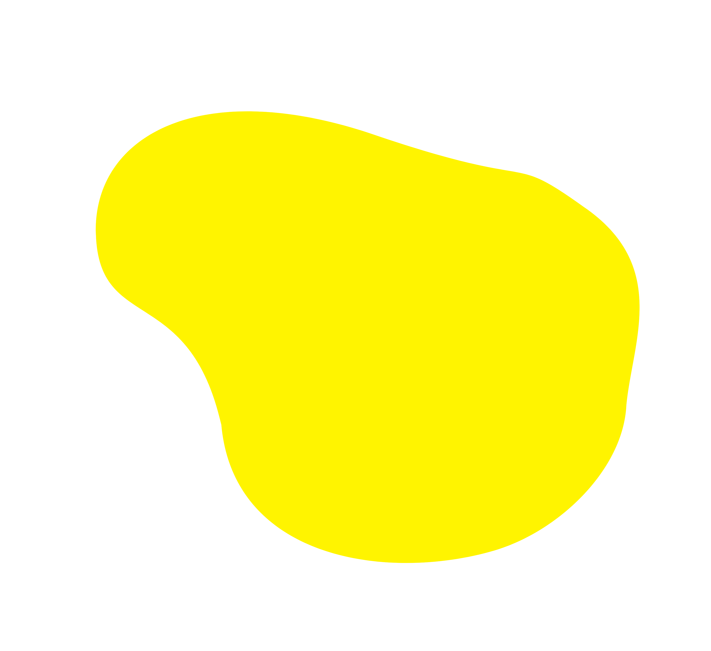
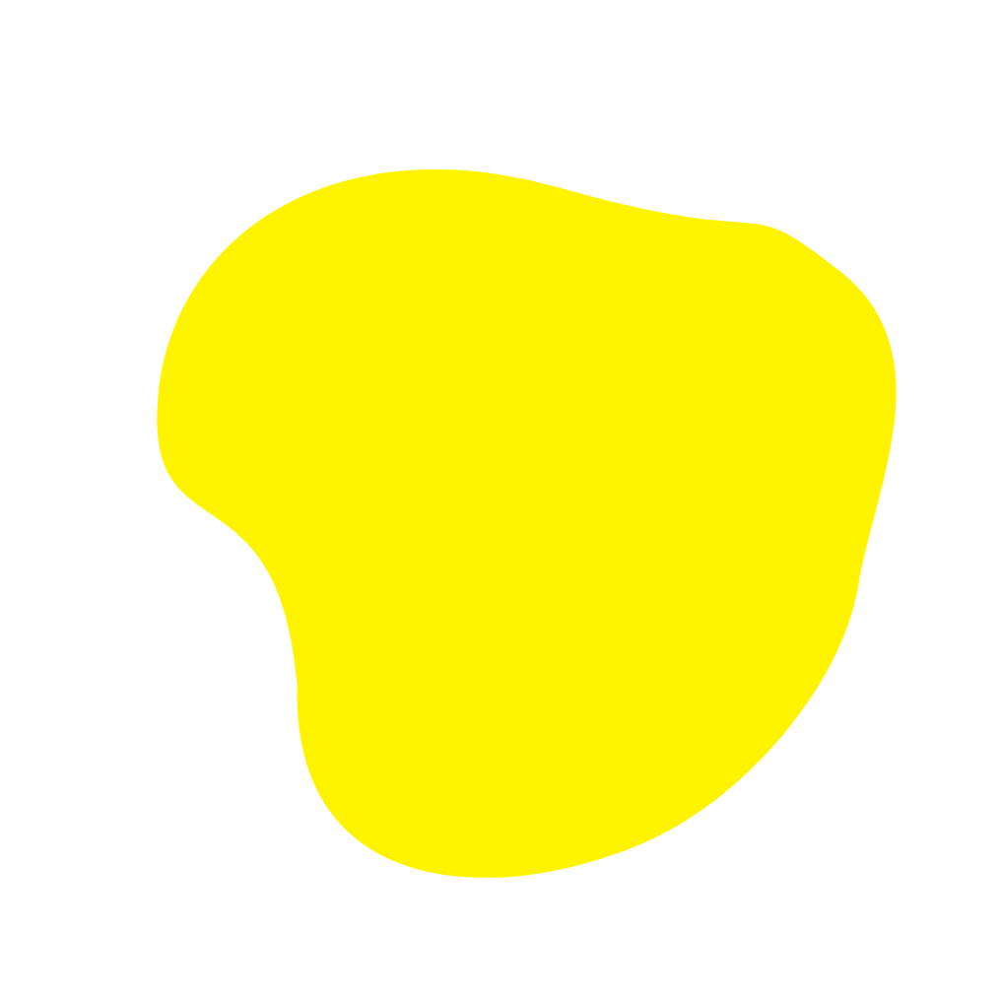
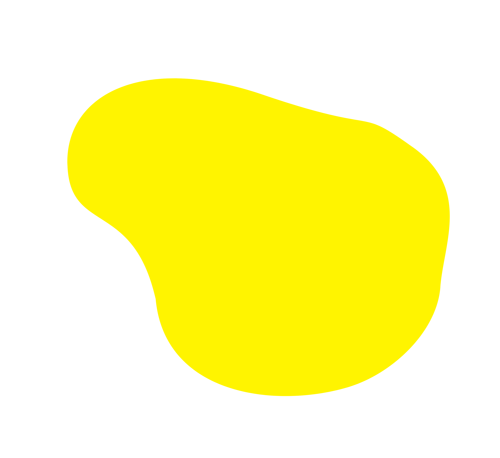
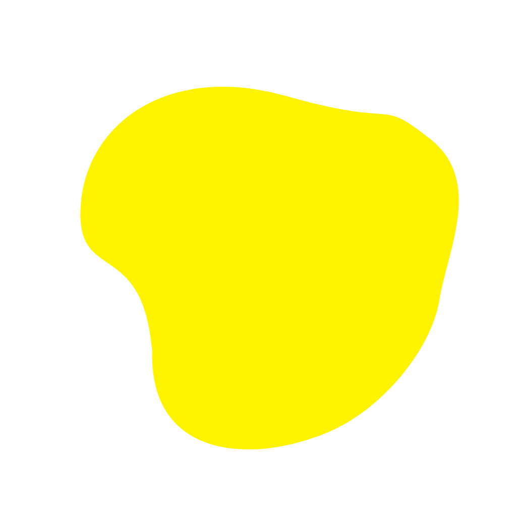

Shubham Dilip Kolate


About
HomeResume
Projects
Skills
Contact
T his is it. ;)
Shubham
Kolate is an Indian
Frontend
Developer & Backend Developer
with a passion for designing beautiful and fuctional wensites. Typically, he’s Driven &
permanently Curious. He’s obsessed with designing things and even more obsessed with designing cool &
clean stuff for the web.
He holds a
bachelor
degree in Computer Engineering.
During his graduation, he has been actively involved in the web design community for the last 1 years. he has
designed websites for small businesses, events, nonprofits and more. Currently he’s based in Pune,
India
. Where he’s working as an independent creative.
His interests, however, extend beyond the web and he loves traveling and riding a bike. He
even loves designing web pages.
When he’s not designing, he’s probably watching series, riding or messing
around on something inspired by YouTube tutorials.
 


